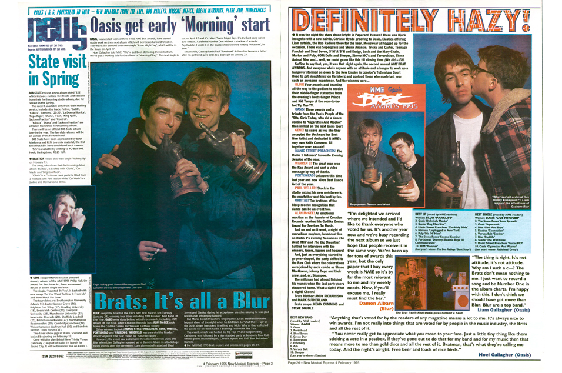

Blur — Country House

Oasis — Roll With It
14 de Agosto de 1995: El día que el rock paralizó al Reino Unido. Blur y Oasis decidieron lanzar sus nuevos sencillos el mismo día, convirtiendo una rivalidad musical en el enfrentamiento cultural más grande de los 90: "Country House" contra "Roll with It", norte contra sur, clase obrera contra clase media, Manchester contra Londres.
14 de Agosto de 1995 · Chart del Reino Unido
"Country House"
274.000 copias
primera semana
"Roll With It"
216.000 copias
primera semana
Blur — Country House
Oasis — Roll With It
El single londinense que habla de un hombre que huye de la ciudad. Llegó al #1 con 274.000 copias vendidas en su primera semana.
El himno mancuniano de los hermanos Gallagher. Quedó en #2 con 216.000 copias, pero ganó la guerra a largo plazo.
El video de "Country House" fue dirigido por Damien Hirst. Irónico, pop y deliberadamente comercial.
Aunque Oasis perdió la batalla de ventas, Morning Glory se convirtió en uno de los discos más vendidos del rock británico.
